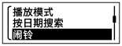
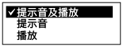

在指定时间播放带闹铃的文件
可在指定时间鸣响闹铃并播放所选择的文件。可在指定的日期、每星期一次或每天的同一时间播放某个文件。可以设置文件的闹铃。
- 选择所要播放的带闹铃的文件。
- 进入闹铃设置模式。
- 在播放停止模式下，选择OPTION- “闹铃”，然后按
 。
。

- 按
 或
或 选择“开”，然后按。
选择“开”，然后按。
- 在播放停止模式下，选择OPTION- “闹铃”，然后按
- 设置闹铃日期和时间。
- 按或选择“日期”、星期或“每天”，然后按。
- 进行以下一项操作。
选择“日期”后，依次设置年份、月份、日期、小时和分钟，如“使用菜单设置时钟（时钟设定）”所述。
选择星期或“每天”后，按
或设置小时，然后按。按或设置分钟，然后按。
- 按
- 按或选择喜好的闹铃模式，然后按。

会显示“请稍候”。
设置过程结束，“”（闹铃指示）将出现在显示窗口。
到达设定的日期和时间时，IC录音机自动开启，“ALARM”显示在显示窗口。随后，将使用所选的闹铃模式播放闹铃和所选的文件。播放结束后，IC录音机自动停止工作。（IC录音机将停在所选文件的开始处。）
闹铃模式说明
可以选择可用菜单项目中的一项。
提示音及播放：
响铃之后播放所选的文件。
提示音：
仅响铃。
播放：
仅播放所选的文件。
注意
- 在录音过程中或“延时录音”倒计时过程中，设置的闹铃不会响起。停止录音或取消“延时录音”设置后，闹铃将开始响起。
- 无法为闹铃选择播客文件。
提示
- 若要更改闹铃设置，选择想要更改闹铃设置的文件，然后按照步骤2至4进行操作。
- 若要取消闹铃设置，按照步骤1和2进行操作。在步骤2中，选择“关”（而非“开”）并按。闹铃被取消，闹铃指示也将从显示窗口消失。
- 若要停止闹铃播放，听到闹铃时，按VOL –/+之外的任一按钮。如果启用HOLD功能，可以按任一按钮停止闹铃播放。